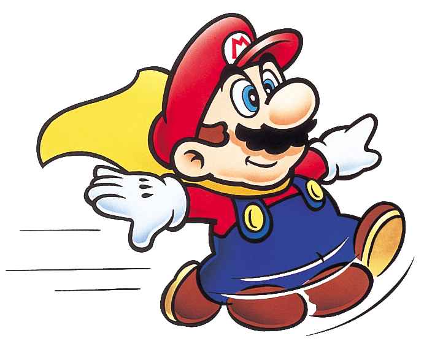
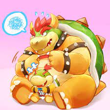
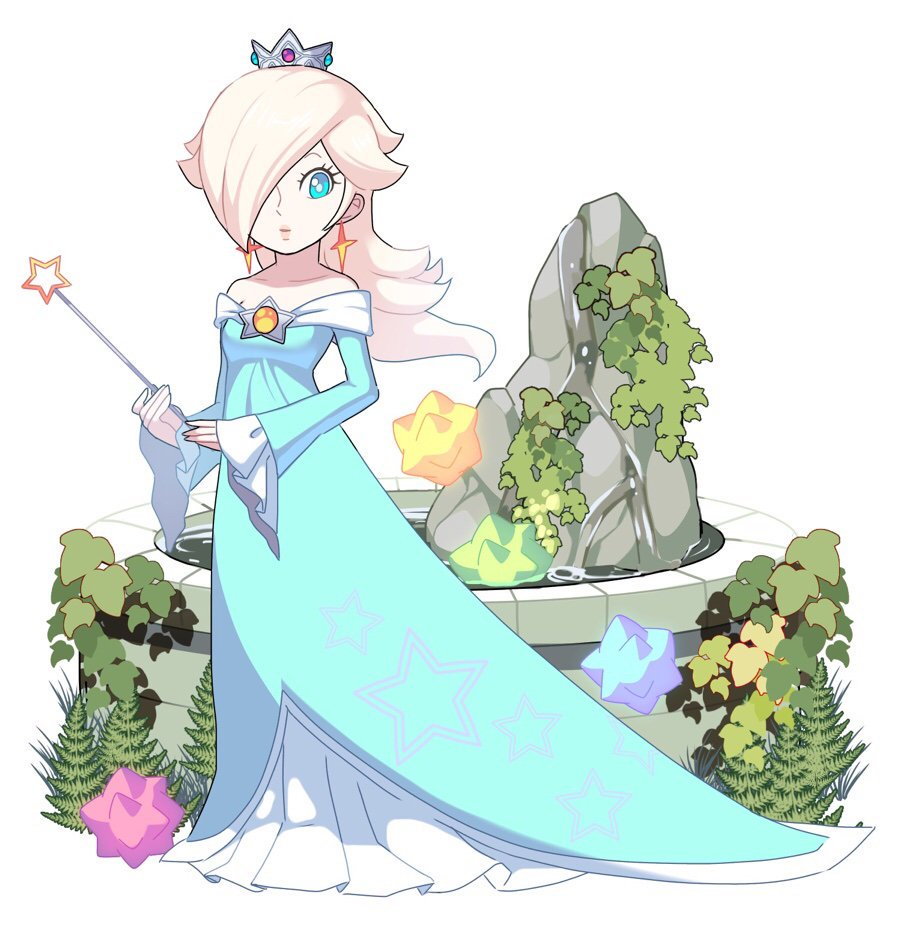
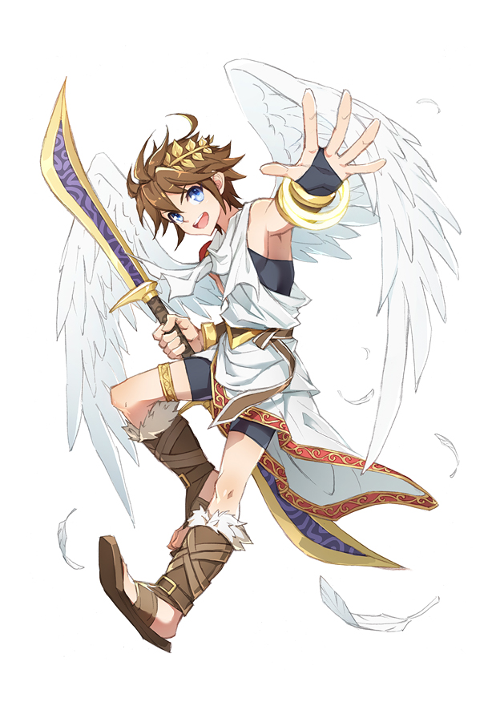
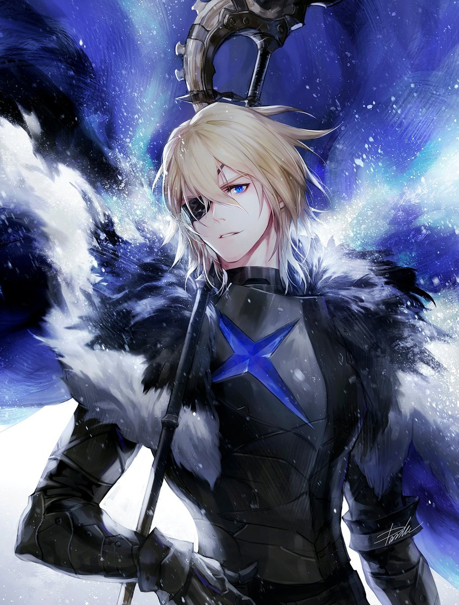
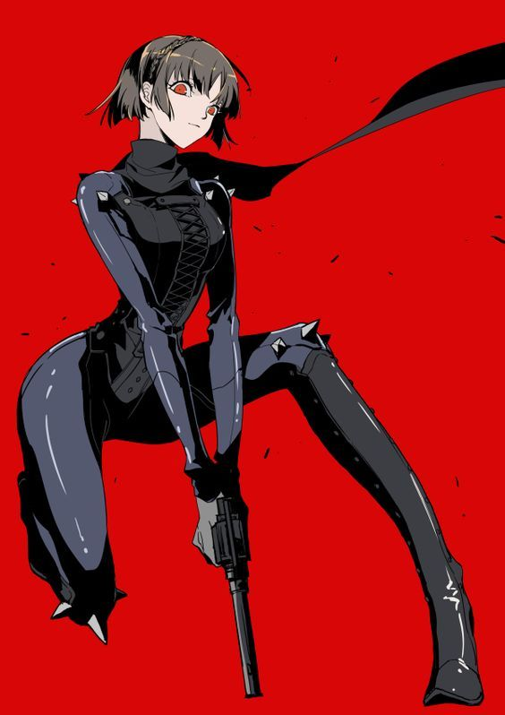
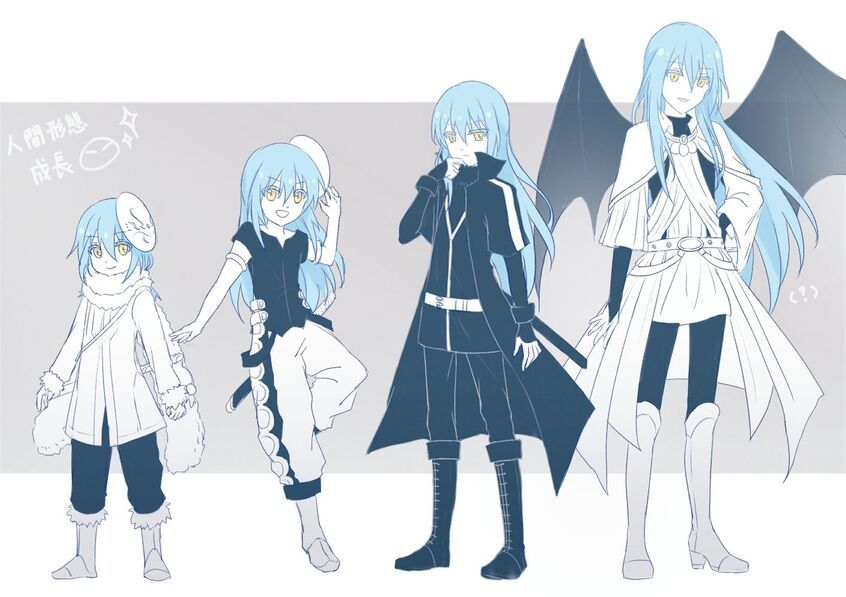
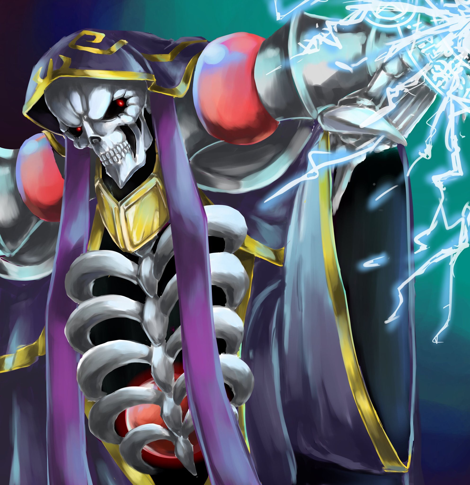
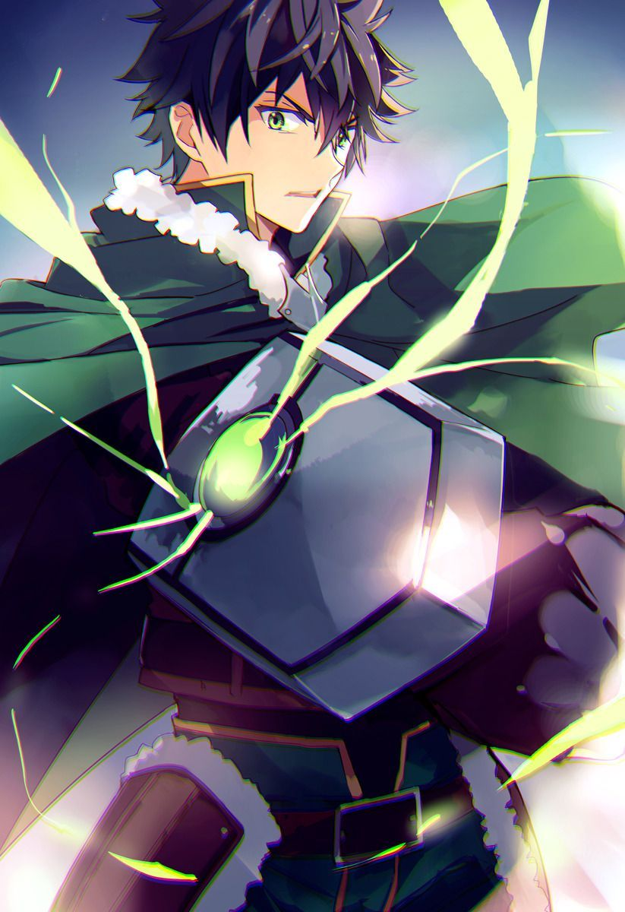
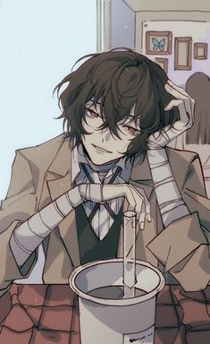

Mario
The biggest icon in the gaming industry. There likely isn’t a single person in the world that doesn’t know him. His games are perfect for new gamers, and he has so many games that follows many different genres of games. The typical platformer, sports, role-playing-games, kart racing, and so many more. With a fanbase so large, Mario has appealed to many people throughout the years. His friendly attitude is capable of winning over anyone.

Bowser
The bad guy in Mario’s world whose main goal is to kidnap Princess Peach. Even up to today, Bowser hasn’t given up on that. Despite that, he can be funny on several occasions, especially when he gets mad at Mario for foiling his plans. Even if they are arch-nemesis, bowser still finds time to go kart racing and party with Mario an his friends. Bowser also has a son, Bowser jr. Despite being a bad guy, seeing him interact with his son is such a treat that you can’t help but smile at such wholesomeness.

Rosalina
One of my first video games was Super Mario Galaxy and this was the title where Rosalina makes her first appearance. She rides in a spaceship, known as the Comet Observatory, and flies throughout the universe. In her endless journey, she helps little star creatures, call Lumas, become planets. They also see her as a mother, which I find very sweet. Rosalina is a kind and gentle person who even has the power to recreate the universe itself. In the Mario cast, she does stand out a little bit, but that doesn’t stop her from helping Mario and friends, as well as having fun with them. The game she stars in holds a special place in my nostalgia.

Pit
A character that has very few games to his franchise. Despite that, watching his latest adventure I Kid Icarus: Uprising makes him one of the funniest and lovable protagonists a game could ask for. He has great conversations with his goddess, Palutena, and even with most of the villains in his adventures. He’s silly, kind, and not that smart. With just one game, he goes from that angel who just happened to be in smash, to a quirky character with great voice acting and writing.
Dark Pit
A good example of how a dark version of the hero should be handled. Most dark versions of heroes are usually mindless beings whose main purpose is to obstruct our hero’s goal. Despite this, Dark Pit is more of an antihero. He actually has a personality. Unlike the cheerful and loyal Pit, Dark Pit is sarcastic and only acts for his wellbeing. He has a good rivalry going on with his real counterpart as they banter throughout the game. Every now and then, Pit would call Dark Pit “Pittoo”, which he does not like at all.

Dimitri: King of Faerghus
: A beloved character in the Fire Emblem Franchise and is part of one of the best stories I’ve seen in a video game. At the start of the game, he seems like a young prince who wants to bring his kingdom together through acts of kindness. We are shown some of these acts, like when he takes a commoner from a destroyed village many looked at in disgust and makes him into his retainer. Even with that said, he holds a strong hatred for the ones responsible for attacking the village, killing his father and brother-like figure. He is kind-hearted and has a strong sense of justice. He also has a weird sense of comedy, such as when he roars with laughter from a dad joke where the punchline is shoved in your face. His character development is handled very well throughout the game.

Niijima: a.k.a Queen
An amazing character with a great redemption story. Makoto is a senior and the school president in the high school she attends. She is studious, a bit of a teacher’s pet, and uncultured. Because of this, many people despise her for being nosy, a stickler for the rules, and even resorting to blackmail. As you go through the game, however, you find out that as a class president and living with her older sister who occasionally snaps due to being overworked. Makoto worries about becoming a disappointment and insignificant, especially when the principal of the school expects a high school student to deal with illegal drug dealers. As you hang out with her, you learn that she does have hobbies and is also very competitive. She just struggles to interact with others because they see her not as a person, but as a robot.

Rimuru Tempest
This character was a 37-year-old man in his previous life where he was stabbed. He was then reincarnated into another world where he takes on the form of a blue slime. The saving grace is that he has the ability to consume anything and analyze it and even has a voice in his head with the knowledge of an advanced supercomputer. This allows him to use the target’s abilities or even take on the form of it. He even befriends a powerful dragon and forms a bond with him. Eventually, he comes across a scrawny goblin village, where it’s inhabitants views Rimuru as a savior. With his powers and growing knowledge, he turns the village into a full-grown city of monsters with paved roads, relations with neighboring countries, and places of business. What I love about Rimuri is that even when he takes on the form of a blue blob, he has so much charm and charisma that it isn’t difficult to figure out why everyone loves him so much, He knows how to run a community, but he still has so much to learn from his peers and allies.

Ainz Ooal Gown a.k.a Momonga
Probably the most powerful character in his world. Many black arts and weapons in his arsenal, loyal subjects, and very charismatic for being a skeleton. However, what makes watching this character so much fun is that he has the mind of your typical salaryman who seeks comfort in video games. This character suddenly finds his conscious in his avatar in a video game where he has everything handed to him on a silver platter. He tries to figure out how royalty would normally act as he worries about failing all of his subjects. What’s funny is that everyone would be impressed with how Ainz is always three steps ahead of him in world domination when in reality, he never knew tht they were taking over the world to begin with. If you were to make a character with unlimited power, it is best to make them feel more human.

Naofumi Iwatani: The Shield Hero
: A character who takes an interesting turn where people in our world are taken to a different world of make believe. He starts out as an optimistic young man excited by the thought of ending up in a medieval kingdom where he would go on a quest with a cute woman. However, every possible thing goes wrong in one day. The woman betrays Naofumi, accusing him of rapping her, and everyone in the kingdom treats him like dirt. His weapon, a shield, makes it difficult for him to kill even the simplest of enemies and it won’t even let him hold any other kind of weapon. Naofumi then turns more cynical and bitter to everyone, especially women. Lacking in funds in a world where many treat him like garbage, he decides to make medicine as a source of income. Unlike many heroes or protagonists, where those characters usually have a strong sense of justice or does everything for the sake of their friends, Naofumi would only act for his own benefit and would do any means necessary to make sure he can survive. Make threats, buying a slave to make up for his lack in firepower, these acts would be frowned upon, but in a corrupt kingdom, he doesn’t really have much of a choice.
